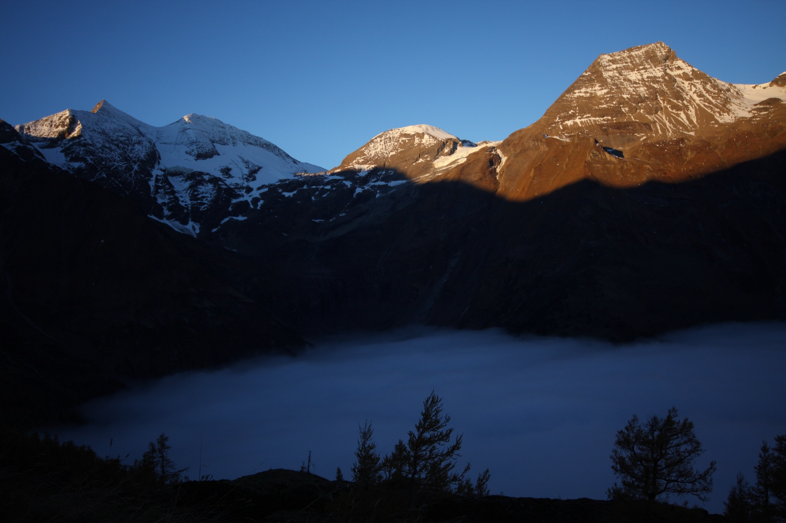
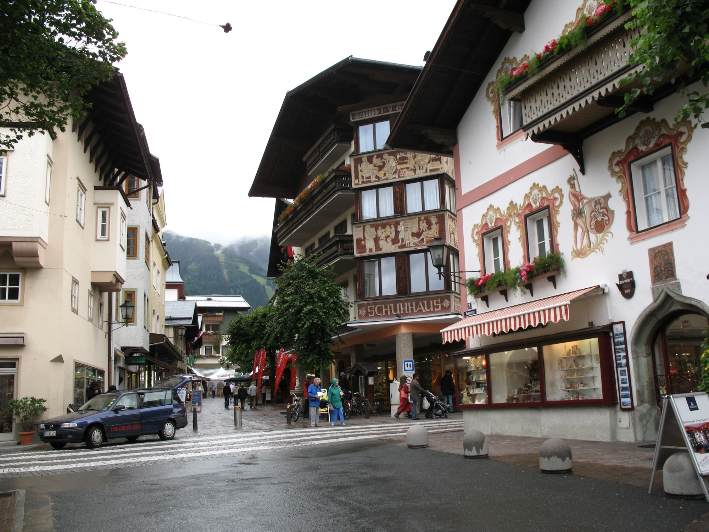
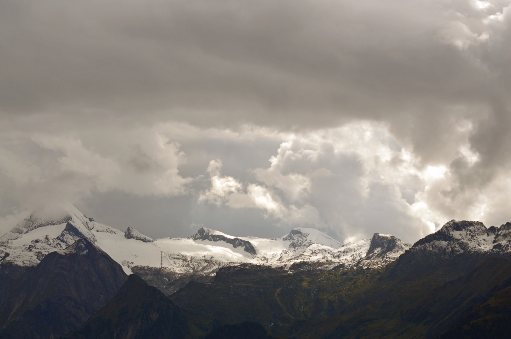
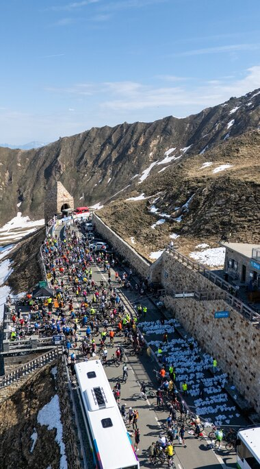
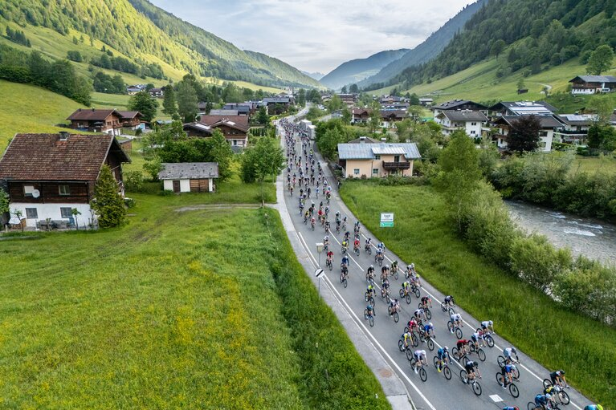
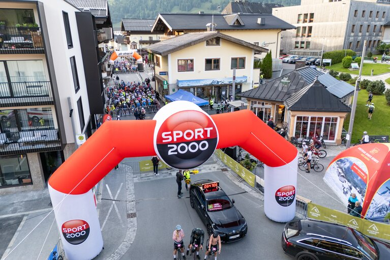
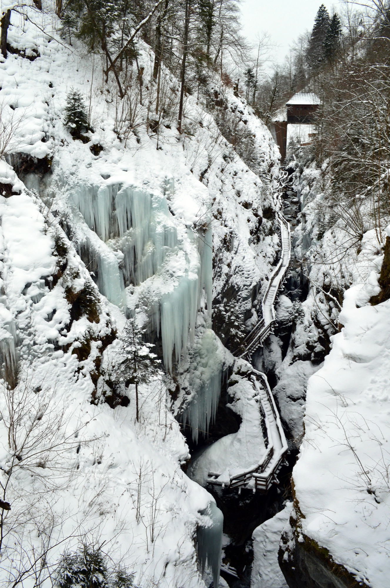
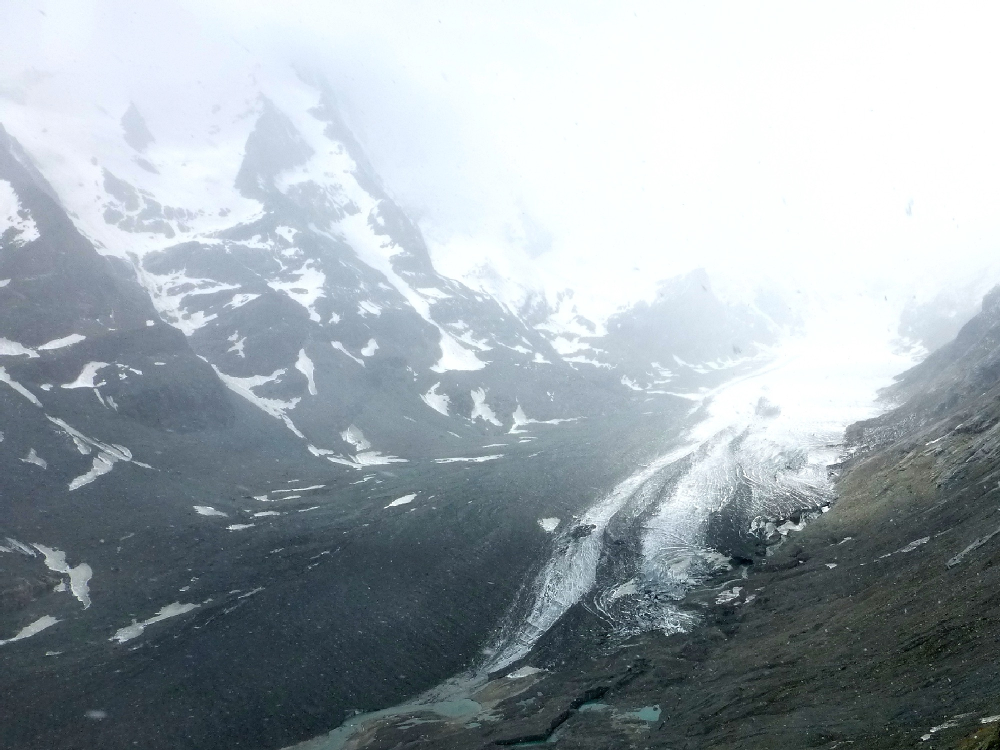

Zell am See — High Tauern, Austria.
One apartment. Nine friends. Three of them — Flo, Felix, and Koko — racing the 29th edition of Austria's most iconic hillclimb.
Everyone else earns the view by driving up the Hochalpenstraße at dawn. Hot coffee in a thermos. Sandwiches in a backpack. Marmots optional.
Only Sunday is locked in — the race is real. Friday and Saturday are example activities the group could do together. Take what you like, swap the rest.
See full schedule →Drinking-water clarity, 4 km long, ringed by snow caps in early June. Apartment is in town — drop bags, walk to the Strandbad in five minutes, swim before lunch.
Wooden walkways bolted into limestone cliffs above a roaring meltwater torrent. 320 m long, depths to 30 m. One easy hour. The racers' legs stay fresh.
Cable car from Kaprun to "Top of Salzburg". 360° Eastern Alps panorama, Schmiedinger glacier under your feet. Eat the packed lunch on the terrace.
The race finish. 27.3 km, 1,672 m of climbing, max 12 %. Fan squad drives the Hochalpenstraße at dawn and meets the racers with hot coffee and a mountain picnic.
Born in 1971, the Glocknerkönig is Austria's oldest open hillclimb — pros and amateurs share the same start line in Bruck at 07:00.
This is the 29th edition. The road itself is older still: opened in 1935, it carved the first paved route across the central Alps and stays closed every winter.


Apartment in Zell am See. Claim bunks, drop bags.
Stock up: breakfasts, lunches, snacks, pasta night.
Picnic at the Strandbad. Drinking-water-clarity lake, mountains in every direction.
1 h boat cruise (€12), the 13 km lake loop, or rent SUPs / kayaks (~€15/h).
Elisabeth-Promenade, Stadtplatz, Vogtturm.
Local Austrian, schnitzel-sized portions. Off the tourist strip.

From Postplatz. Paul & Sabrina can drive separately.
Wooden walkways over a meltwater gorge. One easy hour.
Cable car to the glacier. 360° Alps. Picnic on top.
Strandbad chill, lake swim, paddleboards. Or just nap.
Train to Bruck-Fusch, 5 min, €1.50. Flo, Felix, Koko collect bibs. Fans check out the expo.
Cook together, carb-load. Early night — 05:45 alarm.

Hot coffee in thermos, sandwiches, fruit. Breakfast at 2,400 m.
Paul drives the Hochalpenstraße with Aleks, Anxo, Eva, Sabrina, Berni. Toll €46.50 / car (≈€9.30 each). Arrive at Fuscher Törl before the first finishers.
Train to Bruck-Fusch, 5 min. Warm up at Dorfplatz.
Bruck (756 m) → Fusch → Ferleiten → Fuscher Törl (2,428 m). Refreshment at Piffkar, km 19.2.
Mountain picnic, photos, then walk the Gamsgrubenweg over the Pasterze. Marmots guaranteed.
Drive 17 km further south to the Pasterze viewpoint (2,369 m). Exhibitions, short walks. Highest road point in Austria.
Café at KFJ-Höhe, or back down for Schnitzel at Christian's (from 14:00).
Paul & Sabrina drive Aleks & Anxo to Vienna. Others train back.
Pay only for the nights you stay. Activities are à la carte — every paid one has a free alternative noted on Saturday.
A handful of postcards from the route the racers will ride. Photos from Wikimedia Commons — full credits in the footer.



